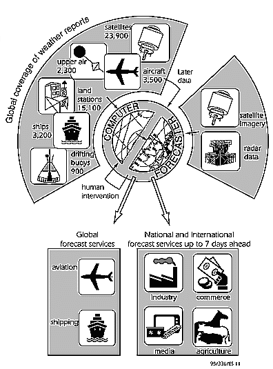

Surface Observations
Traditionally, meteorologists have relied upon observations taken near the Earth's surface using instruments (e.g. barometers, thermometers, anemometers and rain gauges) and visual observations (e.g. cloud and weather type). These surface observations are made at approved sites over the land, and from ships at sea. Standard types of instruments are used and observations are usually made at least every three hours, and in many cases hourly. Over land in the UK there are 30 key observing stations which are needed to define the broad-scale weather patterns. These are manned by professional meteorologists who make observations every hour. However, local small-scale detail is also needed and this demands observations from a denser network. Some of these additional sites are also manned by Met. Office staff, but over 100 are manned by auxiliary observers such as coastguards. Additionally there are more than 50 fully automated sites, and in all there are about 200 observing sites in the UK providing surface observations.
For weather observations at sea, The Met. Office is indebted to the crews of over 500 vessels and rigs of the UK Voluntary Observing Fleet. This is part of a much larger scheme involving over 7000 ships of 49 nations. A dedicated weather ship, maintained by The Met. Office, patrols to the west of the British Isles. To fill in some of the gaps, moored buoys are being positioned to the west of Ireland; other buoys drift in the Atlantic.
Upper-air Observations
Important sources of upper-air information are the balloon-borne instruments (referred to as radiosondes) which provide information about the pressure, temperature and humidity through the atmosphere. Also, from the track of the radiosonde, the wind can be deduced. The radiosondes can reach a height of over 20 km (66,000 feet) and they are released twice a day at the same time (midday and midnight GMT) all over the world. Within the global network, The Met. Office maintains eight sites at home, plus Gibraltar, St Helena, and the Falkland Islands.
To supplement the main radiosonde network, a minisonde system has been set up. These radiosondes are released when required and provide information about pressure, temperature and humidity up to a height of about 5 km. At sea there are a few weather ships which provide upper-air information. However, progress is being made with automatic systems which release radiosondes from the decks of merchant ships. Aircraft reports of wind and temperature along their routes help swell the upper-air information.
Radar
A network of weather radars provides a picture of the rainfall patterns. From the radar it is possible to work out where it is raining and how heavy the rain is. The UK network has been expanded, and with the sites provided by the Republic of Ireland and the States of Jersey, it now covers the whole of the British Isles. Some radar information from the continent is also used. Radar pictures are often shown on television forecasts, and are used by the National Rivers Authority for river management and flood warnings.
Satellites
Since the first meteorological satellite was placed in orbit in 1960, satellites have become essential tools for weather forecasters. The satellites used by meteorologists fall into two categories.
Polar-orbiting satellites pass around the Earth from pole to pole at a height of about 870 km. It takes approximately 1 hour 42 minutes for the satellite to complete its orbit, by which time the earth has rotated by about 25 degrees. Consequently, each pass provides information about a different strip of the atmosphere. Geostationary satellites remain stationary with respect to the earth. This is achieved by having the satellite in orbit at a height of about 36,000 km. At this height it takes exactly 24 hours to complete one orbit so it always views the same part of the globe. The polar-orbiting satellites provide pictures of clouds, and information about the temperature through the atmosphere. Meteosat, the European geostationary satellite, like its US, Japanese and Indian counterparts, gives time sequences of cloud images. From these, wind speeds and directions can be calculated by examining consecutive frames. Hurricane and storm tracks can also be monitored.
The flow of information from observations to forecasts. The numbers give an indication of how many observations are used each 24-hour period as a basis for the global forecasts

![[Left]](../../pics/left.gif)
![[Up]](../../pics/up.gif)
![[Right]](../../pics/right.gif)
![[Home]](../../pics/home.gif)